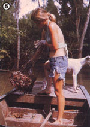

[6] The rich black earth of the Atchafalaya Swamp (made up of topsoil washed down by the Mississippi) produces a bounteous garden (though planting dates are sometimes delayed by floods). [7] Spring's high water level brings the fishing season. [8] The swamp is rich in wildlife, such as these hawks. [9] Learning to cooperate with the bayou environment has brought sweet rewards... including all the vegetables we can eat.